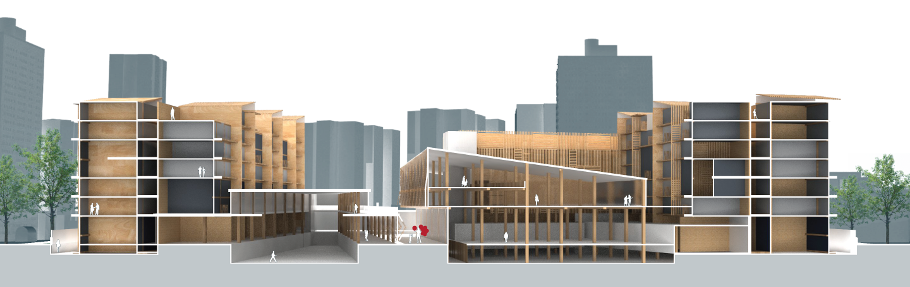
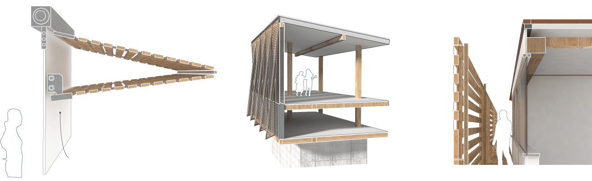
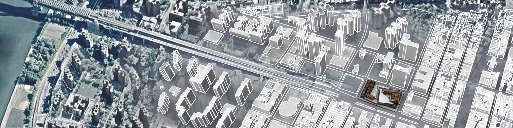
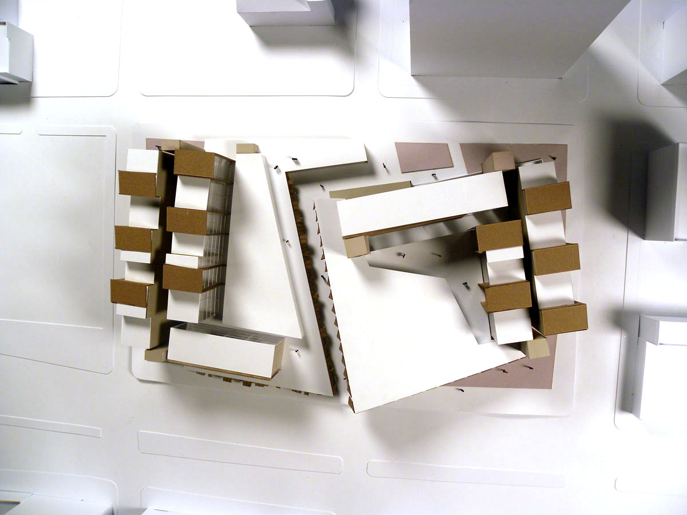
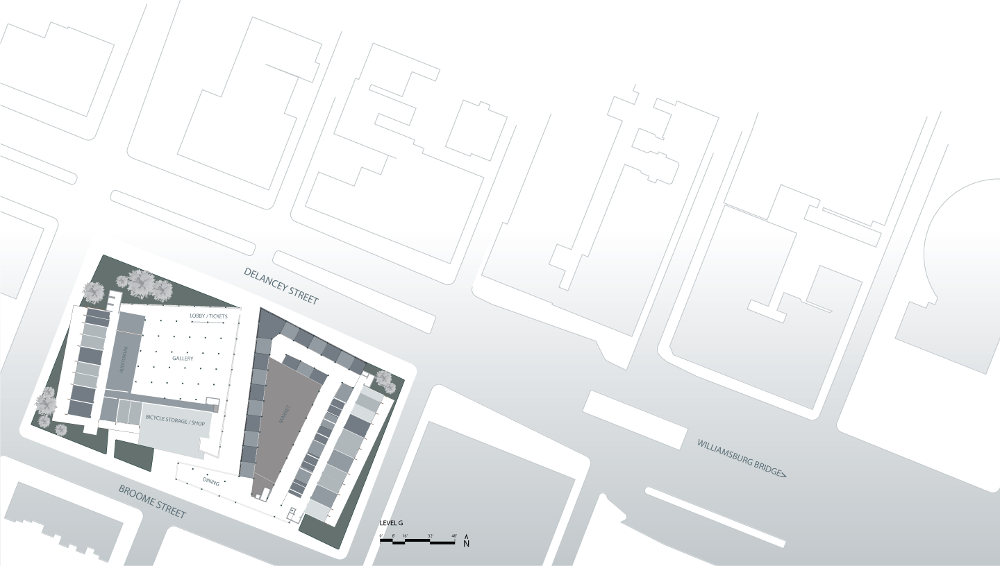
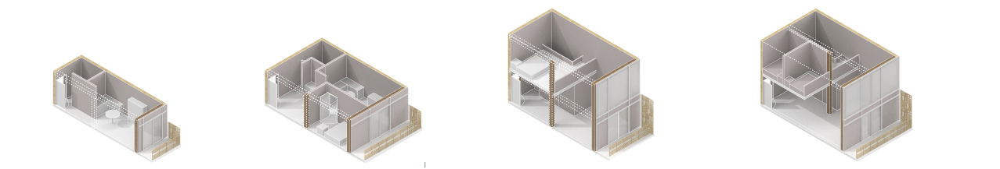
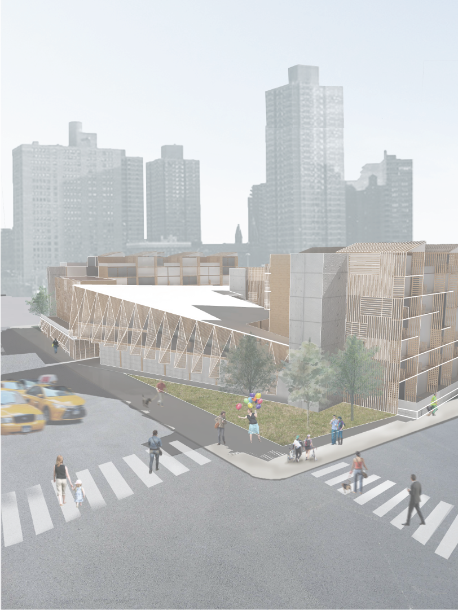

Medley
Embracing the potential of heavy timber as a construction material
This project, awarded for its "Urban Responsiveness," was a submission for the ASCA Timber in the City competition. The program included three distinct parts: low-income housing, the Andy Warhol art museum, and a marketplace.
The Medley scheme stitches together the three program parts with similar but different applications of timber both as a structural material and a shading and design strategy.
Above: Essex Market operable sun shading panels, Warhol Museum louver detail, and residential sun shading details, respectively.
Lower East Side Manhattan exhibits a characteristic sense of community and neighborhood. Happy neighbors make for a happy community and sense of place. The layering of culture, people, place, and frames into a community identity inspires a similar layering of structure and materials. Medley stitches together the three distinct program categories with similar but different personalities. Medley is more than a compliation of parts; its strength lies in the connections and correlation between the three programs. The repeated use of sun shading and timber structural systems weaves the Market, Warhol Museum, and Villas together elegantly.
 The site maintains the existing path that runs down the middle of the site, creating an axis off which visitors can diverge to enter the other spaces. This was a gesture to maintain the existing road layout while also giving direction to the site users.
Above: Micro-unit (~300sf), Single unit (~600sf), Duplex or double unit (~600sf), and Triple unit (~850sf).
The market is found on the ground level and accessible directly off the main axis. Its open floor plan allows for flexible program arrangement. Timber columns are arranged in a grid sized to a typical vendor booth size. The exterior walls are outfitted with operable sun shading that fold up at the discretion of the vendors.
The Warhol Museum is the crown jewel of Medley, enticing visitors to explore the complex. Mirrored across the main axis from the market, the museum appears to hover above the street level and tuck into the residential units. It is framed with glulam beams and grounded on concrete walls. Its nose juts out above the ground level, indicating where visitors should enter the museum. Its shading system is a series of triangulated panels that are peeled away from the glass box of the museum.
The residential towers are a patchwork quilt of brownstone, duplex, and micro-units carefully arranged around the perimeter of the complex. Structural cross-laminated timber walls frame the towers and arrange the housing units into small clusters. The sun shading system is a similar style of woven wooden “louvers” that appear to punch through the walls of the towers.
Medley is more than its parts; its strength lies in the connections and correlation between the three programs. The repeated use of sun shading and similar structural systems stitches the parts together elegantly.